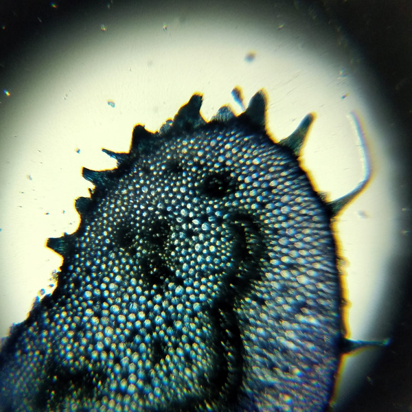
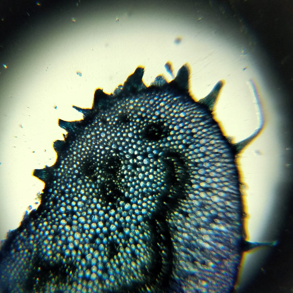

QUARESMEIRA
 

Tibouchina granulosa Cogn. pertence à família Melastomaceae e é popularmente conhecida como quaresmeira, quaresmeira-roxa, quaresma ou flor-de-quaresma. A quaresmeira não tem denominação jeje-nagô e seu orixá relacionado é Nanã. Está ligado aos elementos da natureza terra e seu gênero é masculino. Sentidos: Suas lindas flores vão da tonalidade rosa-claro ao roxo, sendo um grande estímulo à visão. Usos: Árvore de uso ornamental. É conhecida como uma planta própria de Nanã, usada para proteger ambientes durante as festividades dedicadas a ela.